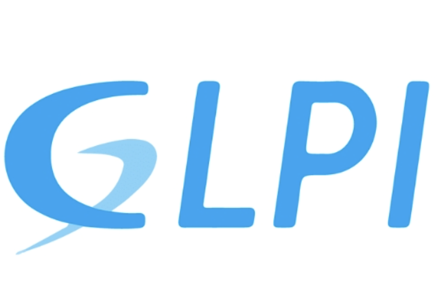
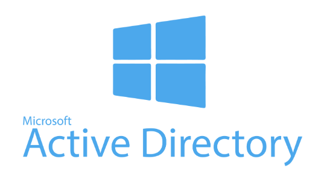
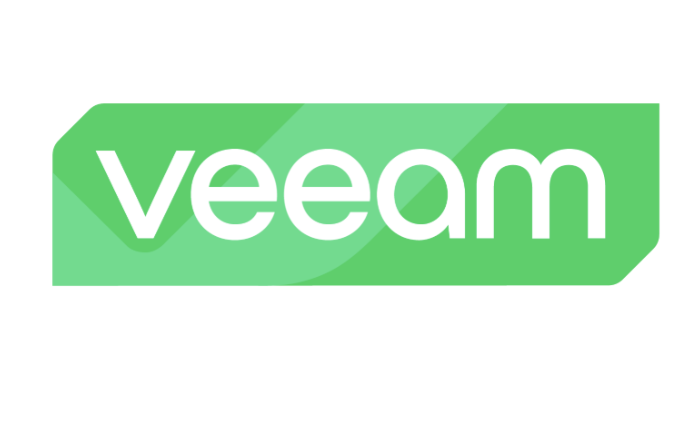
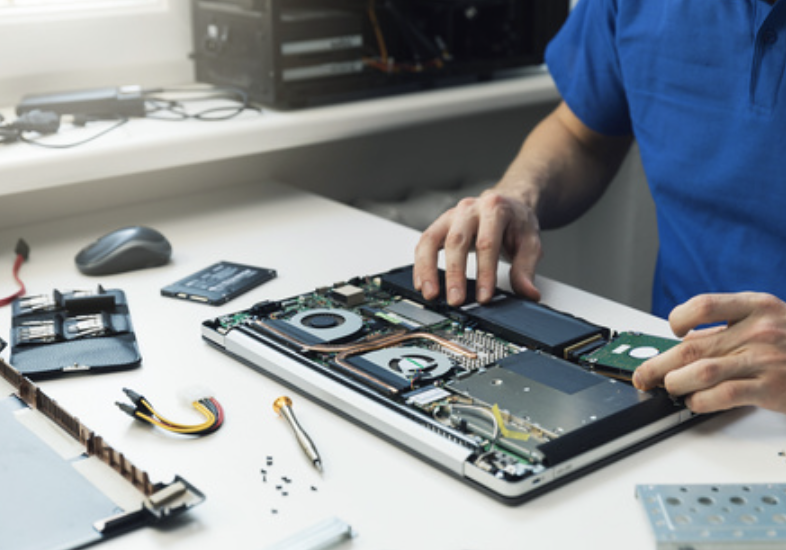

Bienvenue !
Bonjour, moi c'est Alpha DIALLO 👋
Étudiant en BTS SIO (Services Informatiques aux Organisations).
Passionné par la cybersécurité et le réseau.
À propos de moi
Étudiant passionné par l’informatique, je développe mes compétences dans le domaine du réseau et de la cybersécurité en tant qu'apprenti administrateur réseau. J’aime apprendre, expérimenter et relever de nouveaux défis techniques.
💻 Compétences Techniques
- Administration réseau (Windows / Linux)
- Virtualisation (Proxmox, VMware, VirtualBox)
- Cybersécurité (analyse de vulnérabilités, veille sécurité)
- Gestion de serveurs et de sauvegardes (VEEAM , Windows Server)
🤝 Soft Skills
- Travail d’équipe et communication
- Adaptabilité et autonomie
- Esprit d’analyse et de résolution de problèmes
- Rigueur et organisation
- Curiosité et apprentissage continu
BTS SIO
Le BTS Services Informatiques aux Organisations (SIO) forme des techniciens capables de répondre aux besoins informatiques des entreprises. Il propose deux spécialisations :
🛡️ SISR - Solutions d’Infrastructure, Systèmes et Réseaux
Cette spécialité forme les futurs administrateurs réseau et techniciens systèmes. Les étudiants y apprennent à installer, configurer, sécuriser et maintenir les infrastructures informatiques d’une organisation.
- Gestion de serveurs Windows / Linux
- Virtualisation et supervision
- Cybersécurité et protection du réseau
💻 SLAM - Solutions Logicielles et Applications Métiers
Cette spécialité est orientée vers le développement d’applications et la sécurité logicielle. Elle forme des développeurs capables de créer des solutions adaptées aux besoins métiers des entreprises.
- Développement web et mobile
- Gestion de bases de données
- Cybersécurité applicative
Mon CV
Voici mon CV que vous pouvez télécharger ci-dessous :
Télécharger mon CVMes Expériences
Voici mes principales expériences professionnelles réalisées durant mon BTS SIO, qui m'ont permis de développer mes compétences en administration système, réseau et développement web.
Alternance – Administrateur Systèmes & Réseaux
Gestion du système informatique et support technique au Centre François Baclesse.
Depuis septembre 2025, j’effectue mon alternance au sein du service informatique du Centre François Baclesse, où je participe à l’administration du système d’information et au support des utilisateurs.
- Support informatique auprès des utilisateurs.
- Administration Active Directory et gestion des comptes.
- Gestion du parc informatique via GLPI.
- Participation à la migration VMware vers Nutanix.
- Déploiement de bornes WiFi dans le centre.
- Restauration de fichiers via les sauvegardes VEEAM.
Cette alternance me permet d’acquérir une expérience concrète dans l’administration système et réseau au sein d’une infrastructure informatique professionnelle.
Stage – Développeur Web
Création d’un site web et d’une boutique en ligne pour une entreprise.
Lors de mon stage à la Boucherie Niamat'Allah, j’ai développé un site internet afin d’améliorer la visibilité de l’entreprise et faciliter la vente en ligne.
- Création d’un site vitrine pour présenter l’entreprise.
- Développement d’une boutique e-commerce.
- Organisation des pages produits.
- Optimisation du design et de la navigation.
- Configuration des outils de gestion de la boutique.
Cette expérience m’a permis de découvrir le fonctionnement d’un projet web réel et d’apprendre à répondre aux besoins d’un client.
Mes Projets
Voici une sélection de projets et missions réalisés durant mon BTS SIO en alternance au sein du centre François Baclesse.
Gestion du parc informatique - GLPI
Mise en place et utilisation de GLPI pour la gestion du parc et des tickets.
J’ai utilisé GLPI afin de gérer le parc informatique et suivre les incidents utilisateurs.
- Installation et configuration de GLPI
- Connexion avec Active Directory
- Gestion des utilisateurs et rôles
- Suivi des incidents via tickets
- Inventaire du matériel informatique.
- Gestion des équipements informatiques
Cette mission m’a permis de comprendre l’organisation d’un service informatique, la priorisation des incidents et l’importance de la traçabilité dans un environnement professionnel.

Administration Active Directory
Gestion des utilisateurs, groupes et GPO dans le domaine.
J’ai travaillé quotidiennement avec Active Directory afin d’administrer les accès utilisateurs et maintenir une organisation cohérente du domaine.
- Création et gestion des comptes utilisateurs.
- Organisation via unités organisationnelles (OU).
- Mise en place de GPO pour standardiser les postes.
- Gestion des permissions réseau.
- Support lors de problèmes d’authentification.
Cette expérience m’a permis d’acquérir une vraie compréhension de la gestion des identités et de la sécurité dans un environnement Windows Server.

Sauvegarde avec VEEAM
Récupération de fichiers supprimés et restauration de données critiques.
J’ai utilisé VEEAM pour restaurer des fichiers supprimés ou récupérer des versions précédentes demandées par les utilisateurs.
- Recherche dans les sauvegardes planifiées.
- Restauration de fichiers supprimés.
- Récupération de versions anciennes.
- Assistance aux utilisateurs après restauration.
Cette mission m’a permis de comprendre le rôle essentiel des sauvegardes dans la continuité d’activité d’une entreprise.

Dépannage informatique
Support technique auprès des utilisateurs du centre Baclesse.
Au début de mon alternance, j’ai accompagné les techniciens afin d’assurer le support informatique quotidien auprès des utilisateurs.
- Diagnostic et résolution de bugs informatiques.
- Redémarrage et maintenance de postes.
- Remplacement d’écrans et périphériques.
- Vérification des connexions matérielles.
- Assistance directe aux employés.
Cette expérience terrain m’a permis de développer mon sens du service, ma communication professionnelle et ma capacité à résoudre rapidement des problèmes.

Création de comptes utilisateurs
Création des comptes informatiques pour les nouveaux employés.
J’ai participé au processus d’arrivée des nouveaux collaborateurs en préparant leurs accès informatiques complets.
- Création comptes Active Directory.
- Création boîtes mail professionnelles.
- Configuration comptes Microsoft.
- Attribution des droits et groupes.
- Préparation des postes utilisateurs.
Cette mission m’a permis de comprendre les processus internes d’une DSI et l’importance d’une gestion rigoureuse des accès.
Migration VMware vers Nutanix
Migration de l'infrastructure de virtualisation vers Nutanix.
Suite à un contrat avec Nutanix, l’infrastructure a été migrée depuis VMware vers une solution hyperconvergée plus moderne.
- Migration des machines virtuelles.
- Migration des serveurs.
- Création de schémas d’infrastructure Nutanix.
- Installation physique et rack des serveurs.
- Participation aux tests post-migration.
Ce projet majeur m’a permis de découvrir les infrastructures datacenter modernes et les enjeux d’une migration critique.
Création de sites internet
Conception de sites vitrines et boutiques en ligne pour des particuliers.
Pendant une période personnelle et professionnelle, j’ai réalisé plusieurs sites internet pour des particuliers et petits projets entrepreneuriaux. L’objectif était de créer des plateformes modernes, fonctionnelles et faciles à administrer.
- Création de sites vitrines pour présenter des activités professionnelles.
- Développement de boutiques e-commerce.
- Utilisation de Visual Studio Code pour le développement.
- Utilisation de Python pour certains traitements et tests.
- Mise en place de boutiques via Shopify.
- Personnalisation du design et optimisation de l’expérience utilisateur.
Ce projet m’a permis de développer mon autonomie, ma logique de développement web ainsi que ma compréhension globale d’un projet numérique, de la création jusqu’à la mise en production.

Déploiement bornes WiFi
Amélioration de la couverture réseau sans fil du centre.
J’ai participé au renouvellement du réseau WiFi afin d’améliorer la stabilité et la couverture dans l’ensemble du centre.
- Mise à jour firmware des bornes.
- Configuration réseau avec l’équipe technique.
- Installation physique dans différents bâtiments.
- Tests de performance et validation du signal.
Cette mission m’a permis d’approfondir mes connaissances en réseau sans fil et en déploiement d’infrastructure réelle.

Veille Technologique
Ma veille technologique porte principalement sur la cybersécurité, notamment sur les nouvelles menaces, les solutions de défense innovantes et les technologies émergentes liées au réseau et à la sécurité informatique.
🧠 Thème Principal
Cybersécurité et protection des données : suivi des actualités, des failles de sécurité majeures et des innovations dans le domaine.
🔍 Outils de Veille
- Twitter (X) – comptes spécialisés en sécurité
- Reddit – r/cybersecurity, r/netsec
- Sites : ZATAZ, TheHackerNews, CERT-FR
- Flux RSS & alertes Google
📅 Sujets Récents
- Évolution des ransomwares et IA dans la cybersécurité
- Attaques DDoS de nouvelle génération
- Amélioration des protocoles de chiffrement
Tableau de Synthèse
Tu pourras insérer ton tableau de compétences ici (image ou tableau HTML).